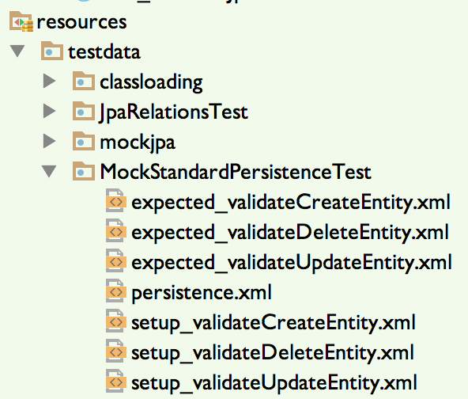
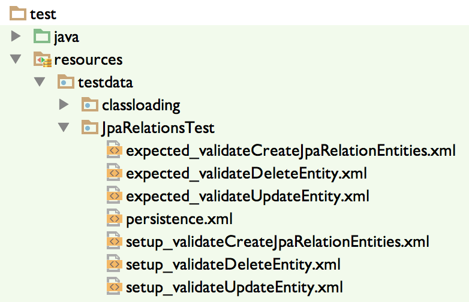

Example: Automated persistence tests
The simplest way to create automated persistence tests is to subclass the superclass StandardPersistenceTest, which hides most of the complexity of the required lifecycle. The 6 steps to automated tests using the Nazgul Core: Persistence Test framework are:
- Create an entity class with JPA annotations.
- Subclass StandardPersistenceTest to create your own automated test class.
- Create a test-scope persistence.xml within the test’s associated resource directory.
- Create test methods in your automated test class.
- For each test method, create setup_(methodName).xml and expected_(methodName).xml containing the setup and expected data (respectively) for the unit test database.
- Add transaction handling method calls as required.
- Validate database data
- Run and enjoy!
Each subsection of the page below will illustrate one of these steps.
1) Create an entity class with JPA annotations: Bird
The Bird class must be JPA-annotated to be usable by an EntityManager; the annotated parts are found in the snippet below. Note that the Bird class extends NazgulEntity, which holds the identity and version fields required by the JPA specification. The NazgulEntity class also supplies other services and simplifications, (for instance, cloning and automatic validation) implying that Entity classes extending it - such as Bird - can focus on the business model instead of the JPA-mandated infrastructure.
@Entity
public class Bird extends NazgulEntity {
@Basic(optional = false)
@Column(nullable = false, length = 64)
private String name;
@Basic(optional = false)
@Column(nullable = false, length = 128)
private String category;
...
}
In the code snippet above, only the JPA-annotated bits of the class are shown. All setters/getters/constructors and nifty bits such as NamedQueries are left out for the sake of brevity.
2) Subclass StandardPersistenceTest:
Simply extend the StandardPersistenceTest class to create your own class, as shown in the code snippet below. It is recommended to use a better name than the example below to preserve your good mood and temper:
public class MockStandardPersistenceTest extends StandardPersistenceTest {
...
}
3) Create a test-scope persistence.xml in the associated resource directory.
The StandardPersistenceTest class expects to find a persistence.xml file in a well-known location, namely a directory found under src/main/resources/testdata/(className). Given that our example test class is called MockStandardPersistenceTest the associated directory is src/main/resources/testdata/MockStandardPersistenceTest, relative to the project basedir. The placement of the persistence.xml is shown in the image below (the other files shown will be discussed shortly):

The persistence.xml file should have the following content:
<?xml version="1.0" encoding="UTF-8"?>
<persistence version="2.1"
xmlns="http://xmlns.jcp.org/xml/ns/persistence"
xmlns:xsi="http://www.w3.org/2001/XMLSchema-instance"
xsi:schemaLocation="http://xmlns.jcp.org/xml/ns/persistence http://xmlns.jcp.org/xml/ns/persistence/persistence_2_1.xsd">
<persistence-unit name="InMemoryTestPU">
<class>se.jguru.nazgul.core.persistence.model.NazgulEntity</class>
<class>se.jguru.nazgul.test.persistence.pets.Bird</class>
<class>se.jguru.nazgul.test.persistence.pets.Seed</class>
<!--
When set to true then only listed classes and jars will
be scanned for persistent classes, otherwise the enclosing
jar or directory will also be scanned. Not applicable to
Java SE persistence units.
-->
<exclude-unlisted-classes>false</exclude-unlisted-classes>
</persistence-unit>
</persistence>
Some points regarding the persistence.xml content are worth noting:
- The persistence version attribute should have the value 2.1 to yield JPA 2.1 behaviour
- The name of the persistence unit should always be InMemoryTestPU
- Always add se.jguru.nazgul.core.persistence.model.NazgulEntity to the list of persisted classes. Also, remember to add all classes you want to use in your JPA persistence unit. Since all tests execute in test scope, you are free to add JPA-annotated test-scope classes to the persistence unit.
- You do not need to add traditional persistence properties (JDBC Driver etc). This is done automatically by the framework to keep the amount of required boilerplate configuration properties down to a minimum.
Now you have created the configuration required by JPA.
3.1) Technical background: Creating database tables
The StandardPersistenceTest uses a custom ClassLoader to ensure that we can use a persistence.xml file placed within the classpath - but not the standard META-INF/persistence.xml, but instead "testdata/" + getClass().getSimpleName() + "/persistence.xml" as shown above. The persistence.xml file is shared for all test methods within a test class - if you want/need to use another persistence.xml, simply create a new unit test class.
One of the nice things about JPA is that providers can use annotated Entity classes to create the database tables in an empty database schema. After connecting to the database (but before populating the database with initial state data) the JPA provider uses all annotated JPA classes known to the PersistenceUnit to create database tables as required for the automated test. Therefore, the database structure is always compatible with the annotated entity classes.
4) Create test methods in your automated test class.
Let’s start with a typical test method that uses the mechanics of the persistence test component. In this case, we use a JPA-annotated class to create a new row in a database table (each table row normally corresponds to an Entity object, remember):
@Test
public void validateCreateEntity() throws Exception {
// Assemble
final Bird eagle = new Bird("Eagle", "Predator");
final IDataSet expected = performStandardTestDbSetup();
// Act
jpa.create(eagle);
commitAndStartNewTransaction();
// Assert
final List<Bird> birds = jpa.fireNamedQuery(Bird.GET_ALL_BIRDS);
final IDataSet dbDataSet = iDatabaseConnection.createDataSet(new String[]{"BIRD"});
Assert.assertEquals(2, birds.size());
Assertion.assertEquals(expected, dbDataSet);
}
Creating the entity in the database is done by the jpa.create(eagle); statement. This method - in turn - is a thin wrapper invokes the standard EntityManager method entityManager.persist(entity); which persists the Bird object in the database. Essentially, the create statement performs all which should be validated within the test. The rest of the statements in the test method either sets up the data within the database or validates what is stored in the database.
Note that the EntityManager is somewhat hidden within the object referenced by the variable jpa. This is an JpaTestPersistenceOperations object, which serves to simplify best practises and shield the EntityManager from potentially problematic operations in test scope.
5) Managing database data: performStandardTestDbSetup()
Databases must normally be pre-populate with a known state before firing JPA operations, in order to ascertain that the annotated entity classes, validators and other tidbits are correctly implemented. The operation which populates a database with initial state data is performStandardTestDbSetup().
This method connects to the (in-memory) database used by the test-scope JPA EntityManager, and uses a configuration file to insert a well-known state into it. The value returned from the performStandardTestDbSetup() method contains the state expected within the database after running the tests (hence called expected):
@Test
public void validateCreateEntity() throws Exception {
// Assemble
...
final IDataSet expected = performStandardTestDbSetup();
The path to the configuration file for the database setup is calculated from the name of the test class and the test method, on the standard form "testdata/" + getClass().getSimpleName() + "/setup_" + testMethodName + ".xml". Illustrated in the image below, this leads to a structure under the testdata resource map where all setup and teardown data files are created in pairs, which yields a rather clean and obvious structure. As illustrated in the image below, the 3 test methods in class JpaRelationsTest for which we want to setup and validate database state are “validateCreateJpaRelationEntities”, “validateDeleteEntity” and “validateUpdateEntity”:
The “setup“ and ”expected” XML files contains standard dbUnit XML data instructions, which are used as templates to insert data into the database or verify data within the database respectively. Since the test aims at creating an entity, we need no previous content in the database.
However, just to illustrate that we need not start a unit test with an empty database, the content of the setup_validateCreateEntity.xml file contains the insertion of a row within the bird table:
<?xml version="1.0" encoding="UTF-8"?>
<dataset>
<BIRD id="1" version="1" name="Hawk" category="Predator" />
</dataset>
This implies that we populate the database with some data before the automated test is started. For further reference to the dataset structure, please refer to the dbUnit website.
6) Add transaction handling method calls as required
Frequently in JEE setups, the application server controls the transaction manager (known as Container-Managed Persistence, or CMP) implying that the developer can avoid mixing business logic and transaction management. This can both be a blessing and a curse depending on the scenario, the developer’s experience and the required level of control. However, in a JPA persistence test-scope scenario we should be able to manually control when to commit or rollback the transaction.
The Nazgul Core: Persistence Test approaches the transaction management in a simple way; the developer typically wants to do one of four things:
| Method | Description |
|---|---|
| commitAndStartNewTransaction(); or commit(true); | Commit the active transaction, flush the JPA state to the database and create a new EntityTransaction for further JPA operations. (A "Write the changes to the database" operation). |
| commit(false); | Commit the active transaction, flush the JPA state to the database and creates a new EntityTransaction for further JPA operations. However, the newly created EntityTransaction is not started (using `begin()`). |
| rollbackAndStartNewTransaction(); or rollback(true); | Rolls the active transaction back, flush the JPA state to the database and create a new, started EntityTransaction for further JPA operations. (An "Abandon the changes to the database" operation). |
| rollback(false); | Commit the active transaction, flush the JPA state to the database and create a new EntityTransaction for further JPA operations. However, the newly created EntityTransaction is not started (using `begin()`) (An "Abandon the changes to the database" operation). |
By exposing these four methods, we can provide a simple entry to the EntityTransaction so developers can control and access database states which can be rather difficult to induce within a running JEE application server.
7) Validating database state/data
When your automatic JPA tests have used Entities to perform some kind of change in the database, you would want to validate the changes done. In this case - just like in the setup phase - we use the dbUnit standard framework. dbUnit has a simple and database-independent way to represent table structures and data within them, and works well with the jUnit test framework.
The standard way to validate database state has 3 parts:
1) Reading the expected state (in the database) from a dbUnit configuration file. This is done by performStandardTestDbSetup() method and delivered as its return value. 2) Reading the actual state from the database, which is done by a standard dbUnit method called createDataSet(). The StandardPersistenceTest class ensures that the iDatabaseConnection variable always points to the active in-memory database used by the JPA engine. 3) Comparing the expected and actual states is done with the standard dbUnit method Assertion.assertEquals(expected, dbDataSet2);.
This is all shown in the code snippet below:
@Test
public void validateCreateEntity() throws Exception {
// Assemble
...
final IDataSet expected = performStandardTestDbSetup();
...
// Assert
final IDataSet dbDataSet = iDatabaseConnection.createDataSet(new String[]{"BIRD"});
Assertion.assertEquals(expected, dbDataSet);
To further simplify validating database state, the Nazgul Core: Persistence Test framework employ a dbUnit configuration file with the path "testdata/" + getClass().getSimpleName() + "/expected_" + testMethodName + ".xml", as illustrated in the image below:

The content of the expected dbUnit XML file is:
<?xml version="1.0" encoding="UTF-8"?>
<dataset>
</dataset>
8) Run and enjoy!
These steps are really all you should need to walk through in order to verify your JPA-annotated entities using the Nazgul Core: Persistence Test framework. However, usability hint could be of use:
Extracting database state
To extract database state at some point in the test, simply use the convenience method extractFlatXmlDataSet:
// Get the data from the database
final IDataSet dbDataSet2 = iDatabaseConnection.createDataSet();
// Simply print out the dbUnit-compliant XML for the given data state
System.out.println("Got: " + extractFlatXmlDataSet(dbDataSet2));